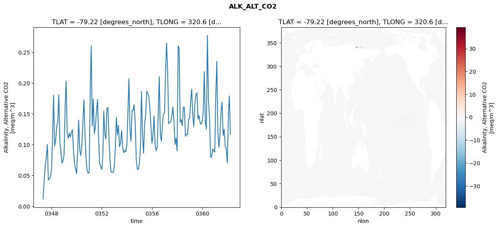
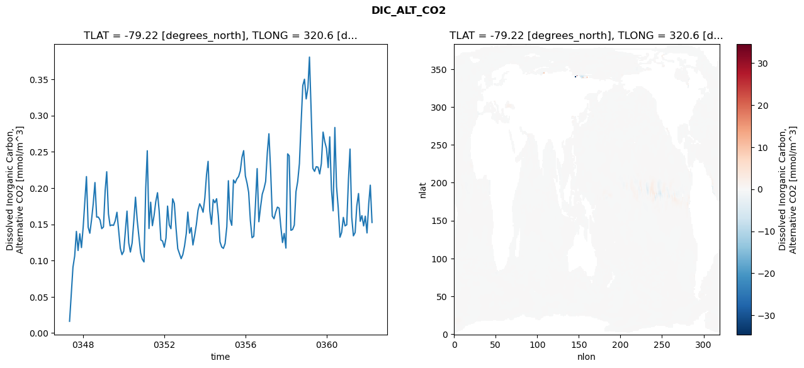
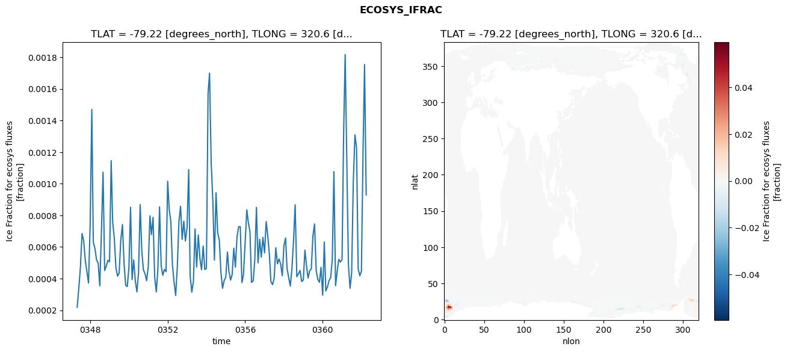
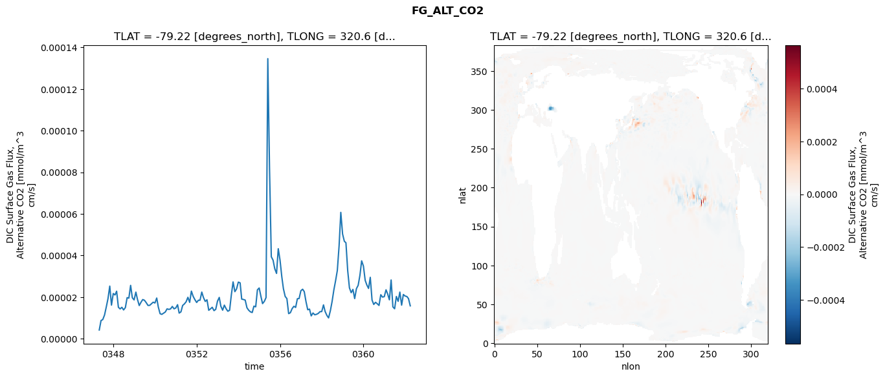

glb-dor_North_Atlantic_basin_028_1999-04-01_00113#
Simulation details#
Case: smyle.cdr-atlas-v0.glb-dor_North_Atlantic_basin_028_1999-04-01_00113.001
Basin: North_Atlantic_basin
Polygon: 28.0
Start date: 1999-04
Show code cell source Hide code cell source
import xarray as xr
import matplotlib.pyplot as plt
Show code cell source Hide code cell source
zarr_store = "/path/to/zarr/store"
# Parameters
zarr_store = "/global/cfs/projectdirs/m4746/Projects/Ocean-CDR-Atlas-v0/data/validation/smyle.cdr-atlas-v0.glb-dor_North_Atlantic_basin_028_1999-04-01_00113.001.validation.zarr"
Show code cell source Hide code cell source
%%time
ds_o = xr.open_zarr(zarr_store).compute()
ds_o
CPU times: user 585 ms, sys: 486 ms, total: 1.07 s
Wall time: 1.32 s
<xarray.Dataset> Size: 2MB
Dimensions: (nlat: 384, nlon: 320, time: 180)
Coordinates:
TLAT float64 8B -79.22
TLONG float64 8B 320.6
ULAT float64 8B -78.95
ULONG float64 8B 321.1
* time (time) object 1kB 0347-05-01 00:00:00 ... 0362-04-01 0...
z_t float32 4B 500.0
Dimensions without coordinates: nlat, nlon
Data variables:
ALK_ALT_CO2_diff (nlat, nlon) float32 492kB nan nan nan ... nan nan nan
ALK_ALT_CO2_rmse (time) float64 1kB 0.01164 0.04149 ... 0.1794 0.1166
DIC_ALT_CO2_diff (nlat, nlon) float32 492kB nan nan nan ... nan nan nan
DIC_ALT_CO2_rmse (time) float64 1kB 0.01622 0.05365 ... 0.2039 0.1525
ECOSYS_IFRAC_diff (nlat, nlon) float32 492kB nan nan nan ... nan nan nan
ECOSYS_IFRAC_rmse (time) float64 1kB 0.0002183 0.0003394 ... 0.0009294
FG_ALT_CO2_diff (nlat, nlon) float32 492kB nan nan nan ... nan nan nan
FG_ALT_CO2_rmse (time) float64 1kB 4.168e-06 8.724e-06 ... 1.579e-05xarray.Dataset
- nlat: 384
- nlon: 320
- time: 180
- TLAT()float64-79.22
- long_name :
- array of t-grid latitudes
- units :
- degrees_north
array(-79.22052261)
- TLONG()float64320.6
- long_name :
- array of t-grid longitudes
- units :
- degrees_east
array(320.56250892)
- ULAT()float64-78.95
- long_name :
- array of u-grid latitudes
- units :
- degrees_north
array(-78.95289509)
- ULONG()float64321.1
- long_name :
- array of u-grid longitudes
- units :
- degrees_east
array(321.12500894)
- time(time)object0347-05-01 00:00:00 ... 0362-04-...
- bounds :
- time_bound
- long_name :
- time
array([cftime.DatetimeNoLeap(347, 5, 1, 0, 0, 0, 0, has_year_zero=True), cftime.DatetimeNoLeap(347, 6, 1, 0, 0, 0, 0, has_year_zero=True), cftime.DatetimeNoLeap(347, 7, 1, 0, 0, 0, 0, has_year_zero=True), cftime.DatetimeNoLeap(347, 8, 1, 0, 0, 0, 0, has_year_zero=True), cftime.DatetimeNoLeap(347, 9, 1, 0, 0, 0, 0, has_year_zero=True), cftime.DatetimeNoLeap(347, 10, 1, 0, 0, 0, 0, has_year_zero=True), cftime.DatetimeNoLeap(347, 11, 1, 0, 0, 0, 0, has_year_zero=True), cftime.DatetimeNoLeap(347, 12, 1, 0, 0, 0, 0, has_year_zero=True), cftime.DatetimeNoLeap(348, 1, 1, 0, 0, 0, 0, has_year_zero=True), cftime.DatetimeNoLeap(348, 2, 1, 0, 0, 0, 0, has_year_zero=True), cftime.DatetimeNoLeap(348, 3, 1, 0, 0, 0, 0, has_year_zero=True), cftime.DatetimeNoLeap(348, 4, 1, 0, 0, 0, 0, has_year_zero=True), cftime.DatetimeNoLeap(348, 5, 1, 0, 0, 0, 0, has_year_zero=True), cftime.DatetimeNoLeap(348, 6, 1, 0, 0, 0, 0, has_year_zero=True), cftime.DatetimeNoLeap(348, 7, 1, 0, 0, 0, 0, has_year_zero=True), cftime.DatetimeNoLeap(348, 8, 1, 0, 0, 0, 0, has_year_zero=True), cftime.DatetimeNoLeap(348, 9, 1, 0, 0, 0, 0, has_year_zero=True), cftime.DatetimeNoLeap(348, 10, 1, 0, 0, 0, 0, has_year_zero=True), cftime.DatetimeNoLeap(348, 11, 1, 0, 0, 0, 0, has_year_zero=True), cftime.DatetimeNoLeap(348, 12, 1, 0, 0, 0, 0, has_year_zero=True), cftime.DatetimeNoLeap(349, 1, 1, 0, 0, 0, 0, has_year_zero=True), cftime.DatetimeNoLeap(349, 2, 1, 0, 0, 0, 0, has_year_zero=True), cftime.DatetimeNoLeap(349, 3, 1, 0, 0, 0, 0, has_year_zero=True), cftime.DatetimeNoLeap(349, 4, 1, 0, 0, 0, 0, has_year_zero=True), cftime.DatetimeNoLeap(349, 5, 1, 0, 0, 0, 0, has_year_zero=True), cftime.DatetimeNoLeap(349, 6, 1, 0, 0, 0, 0, has_year_zero=True), cftime.DatetimeNoLeap(349, 7, 1, 0, 0, 0, 0, has_year_zero=True), cftime.DatetimeNoLeap(349, 8, 1, 0, 0, 0, 0, has_year_zero=True), cftime.DatetimeNoLeap(349, 9, 1, 0, 0, 0, 0, has_year_zero=True), cftime.DatetimeNoLeap(349, 10, 1, 0, 0, 0, 0, has_year_zero=True), cftime.DatetimeNoLeap(349, 11, 1, 0, 0, 0, 0, has_year_zero=True), cftime.DatetimeNoLeap(349, 12, 1, 0, 0, 0, 0, has_year_zero=True), cftime.DatetimeNoLeap(350, 1, 1, 0, 0, 0, 0, has_year_zero=True), cftime.DatetimeNoLeap(350, 2, 1, 0, 0, 0, 0, has_year_zero=True), cftime.DatetimeNoLeap(350, 3, 1, 0, 0, 0, 0, has_year_zero=True), cftime.DatetimeNoLeap(350, 4, 1, 0, 0, 0, 0, has_year_zero=True), cftime.DatetimeNoLeap(350, 5, 1, 0, 0, 0, 0, has_year_zero=True), cftime.DatetimeNoLeap(350, 6, 1, 0, 0, 0, 0, has_year_zero=True), cftime.DatetimeNoLeap(350, 7, 1, 0, 0, 0, 0, has_year_zero=True), cftime.DatetimeNoLeap(350, 8, 1, 0, 0, 0, 0, has_year_zero=True), cftime.DatetimeNoLeap(350, 9, 1, 0, 0, 0, 0, has_year_zero=True), cftime.DatetimeNoLeap(350, 10, 1, 0, 0, 0, 0, has_year_zero=True), cftime.DatetimeNoLeap(350, 11, 1, 0, 0, 0, 0, has_year_zero=True), cftime.DatetimeNoLeap(350, 12, 1, 0, 0, 0, 0, has_year_zero=True), cftime.DatetimeNoLeap(351, 1, 1, 0, 0, 0, 0, has_year_zero=True), cftime.DatetimeNoLeap(351, 2, 1, 0, 0, 0, 0, has_year_zero=True), cftime.DatetimeNoLeap(351, 3, 1, 0, 0, 0, 0, has_year_zero=True), cftime.DatetimeNoLeap(351, 4, 1, 0, 0, 0, 0, has_year_zero=True), cftime.DatetimeNoLeap(351, 5, 1, 0, 0, 0, 0, has_year_zero=True), cftime.DatetimeNoLeap(351, 6, 1, 0, 0, 0, 0, has_year_zero=True), cftime.DatetimeNoLeap(351, 7, 1, 0, 0, 0, 0, has_year_zero=True), cftime.DatetimeNoLeap(351, 8, 1, 0, 0, 0, 0, has_year_zero=True), cftime.DatetimeNoLeap(351, 9, 1, 0, 0, 0, 0, has_year_zero=True), cftime.DatetimeNoLeap(351, 10, 1, 0, 0, 0, 0, has_year_zero=True), cftime.DatetimeNoLeap(351, 11, 1, 0, 0, 0, 0, has_year_zero=True), cftime.DatetimeNoLeap(351, 12, 1, 0, 0, 0, 0, has_year_zero=True), cftime.DatetimeNoLeap(352, 1, 1, 0, 0, 0, 0, has_year_zero=True), cftime.DatetimeNoLeap(352, 2, 1, 0, 0, 0, 0, has_year_zero=True), cftime.DatetimeNoLeap(352, 3, 1, 0, 0, 0, 0, has_year_zero=True), cftime.DatetimeNoLeap(352, 4, 1, 0, 0, 0, 0, has_year_zero=True), cftime.DatetimeNoLeap(352, 5, 1, 0, 0, 0, 0, has_year_zero=True), cftime.DatetimeNoLeap(352, 6, 1, 0, 0, 0, 0, has_year_zero=True), cftime.DatetimeNoLeap(352, 7, 1, 0, 0, 0, 0, has_year_zero=True), cftime.DatetimeNoLeap(352, 8, 1, 0, 0, 0, 0, has_year_zero=True), cftime.DatetimeNoLeap(352, 9, 1, 0, 0, 0, 0, has_year_zero=True), cftime.DatetimeNoLeap(352, 10, 1, 0, 0, 0, 0, has_year_zero=True), cftime.DatetimeNoLeap(352, 11, 1, 0, 0, 0, 0, has_year_zero=True), cftime.DatetimeNoLeap(352, 12, 1, 0, 0, 0, 0, has_year_zero=True), cftime.DatetimeNoLeap(353, 1, 1, 0, 0, 0, 0, has_year_zero=True), cftime.DatetimeNoLeap(353, 2, 1, 0, 0, 0, 0, has_year_zero=True), cftime.DatetimeNoLeap(353, 3, 1, 0, 0, 0, 0, has_year_zero=True), cftime.DatetimeNoLeap(353, 4, 1, 0, 0, 0, 0, has_year_zero=True), cftime.DatetimeNoLeap(353, 5, 1, 0, 0, 0, 0, has_year_zero=True), cftime.DatetimeNoLeap(353, 6, 1, 0, 0, 0, 0, has_year_zero=True), cftime.DatetimeNoLeap(353, 7, 1, 0, 0, 0, 0, has_year_zero=True), cftime.DatetimeNoLeap(353, 8, 1, 0, 0, 0, 0, has_year_zero=True), cftime.DatetimeNoLeap(353, 9, 1, 0, 0, 0, 0, has_year_zero=True), cftime.DatetimeNoLeap(353, 10, 1, 0, 0, 0, 0, has_year_zero=True), cftime.DatetimeNoLeap(353, 11, 1, 0, 0, 0, 0, has_year_zero=True), cftime.DatetimeNoLeap(353, 12, 1, 0, 0, 0, 0, has_year_zero=True), cftime.DatetimeNoLeap(354, 1, 1, 0, 0, 0, 0, has_year_zero=True), cftime.DatetimeNoLeap(354, 2, 1, 0, 0, 0, 0, has_year_zero=True), cftime.DatetimeNoLeap(354, 3, 1, 0, 0, 0, 0, has_year_zero=True), cftime.DatetimeNoLeap(354, 4, 1, 0, 0, 0, 0, has_year_zero=True), cftime.DatetimeNoLeap(354, 5, 1, 0, 0, 0, 0, has_year_zero=True), cftime.DatetimeNoLeap(354, 6, 1, 0, 0, 0, 0, has_year_zero=True), cftime.DatetimeNoLeap(354, 7, 1, 0, 0, 0, 0, has_year_zero=True), cftime.DatetimeNoLeap(354, 8, 1, 0, 0, 0, 0, has_year_zero=True), cftime.DatetimeNoLeap(354, 9, 1, 0, 0, 0, 0, has_year_zero=True), cftime.DatetimeNoLeap(354, 10, 1, 0, 0, 0, 0, has_year_zero=True), cftime.DatetimeNoLeap(354, 11, 1, 0, 0, 0, 0, has_year_zero=True), cftime.DatetimeNoLeap(354, 12, 1, 0, 0, 0, 0, has_year_zero=True), cftime.DatetimeNoLeap(355, 1, 1, 0, 0, 0, 0, has_year_zero=True), cftime.DatetimeNoLeap(355, 2, 1, 0, 0, 0, 0, has_year_zero=True), cftime.DatetimeNoLeap(355, 3, 1, 0, 0, 0, 0, has_year_zero=True), cftime.DatetimeNoLeap(355, 4, 1, 0, 0, 0, 0, has_year_zero=True), cftime.DatetimeNoLeap(355, 5, 1, 0, 0, 0, 0, has_year_zero=True), cftime.DatetimeNoLeap(355, 6, 1, 0, 0, 0, 0, has_year_zero=True), cftime.DatetimeNoLeap(355, 7, 1, 0, 0, 0, 0, has_year_zero=True), cftime.DatetimeNoLeap(355, 8, 1, 0, 0, 0, 0, has_year_zero=True), cftime.DatetimeNoLeap(355, 9, 1, 0, 0, 0, 0, has_year_zero=True), cftime.DatetimeNoLeap(355, 10, 1, 0, 0, 0, 0, has_year_zero=True), cftime.DatetimeNoLeap(355, 11, 1, 0, 0, 0, 0, has_year_zero=True), cftime.DatetimeNoLeap(355, 12, 1, 0, 0, 0, 0, has_year_zero=True), cftime.DatetimeNoLeap(356, 1, 1, 0, 0, 0, 0, has_year_zero=True), cftime.DatetimeNoLeap(356, 2, 1, 0, 0, 0, 0, has_year_zero=True), cftime.DatetimeNoLeap(356, 3, 1, 0, 0, 0, 0, has_year_zero=True), cftime.DatetimeNoLeap(356, 4, 1, 0, 0, 0, 0, has_year_zero=True), cftime.DatetimeNoLeap(356, 5, 1, 0, 0, 0, 0, has_year_zero=True), cftime.DatetimeNoLeap(356, 6, 1, 0, 0, 0, 0, has_year_zero=True), cftime.DatetimeNoLeap(356, 7, 1, 0, 0, 0, 0, has_year_zero=True), cftime.DatetimeNoLeap(356, 8, 1, 0, 0, 0, 0, has_year_zero=True), cftime.DatetimeNoLeap(356, 9, 1, 0, 0, 0, 0, has_year_zero=True), cftime.DatetimeNoLeap(356, 10, 1, 0, 0, 0, 0, has_year_zero=True), cftime.DatetimeNoLeap(356, 11, 1, 0, 0, 0, 0, has_year_zero=True), cftime.DatetimeNoLeap(356, 12, 1, 0, 0, 0, 0, has_year_zero=True), cftime.DatetimeNoLeap(357, 1, 1, 0, 0, 0, 0, has_year_zero=True), cftime.DatetimeNoLeap(357, 2, 1, 0, 0, 0, 0, has_year_zero=True), cftime.DatetimeNoLeap(357, 3, 1, 0, 0, 0, 0, has_year_zero=True), cftime.DatetimeNoLeap(357, 4, 1, 0, 0, 0, 0, has_year_zero=True), cftime.DatetimeNoLeap(357, 5, 1, 0, 0, 0, 0, has_year_zero=True), cftime.DatetimeNoLeap(357, 6, 1, 0, 0, 0, 0, has_year_zero=True), cftime.DatetimeNoLeap(357, 7, 1, 0, 0, 0, 0, has_year_zero=True), cftime.DatetimeNoLeap(357, 8, 1, 0, 0, 0, 0, has_year_zero=True), cftime.DatetimeNoLeap(357, 9, 1, 0, 0, 0, 0, has_year_zero=True), cftime.DatetimeNoLeap(357, 10, 1, 0, 0, 0, 0, has_year_zero=True), cftime.DatetimeNoLeap(357, 11, 1, 0, 0, 0, 0, has_year_zero=True), cftime.DatetimeNoLeap(357, 12, 1, 0, 0, 0, 0, has_year_zero=True), cftime.DatetimeNoLeap(358, 1, 1, 0, 0, 0, 0, has_year_zero=True), cftime.DatetimeNoLeap(358, 2, 1, 0, 0, 0, 0, has_year_zero=True), cftime.DatetimeNoLeap(358, 3, 1, 0, 0, 0, 0, has_year_zero=True), cftime.DatetimeNoLeap(358, 4, 1, 0, 0, 0, 0, has_year_zero=True), cftime.DatetimeNoLeap(358, 5, 1, 0, 0, 0, 0, has_year_zero=True), cftime.DatetimeNoLeap(358, 6, 1, 0, 0, 0, 0, has_year_zero=True), cftime.DatetimeNoLeap(358, 7, 1, 0, 0, 0, 0, has_year_zero=True), cftime.DatetimeNoLeap(358, 8, 1, 0, 0, 0, 0, has_year_zero=True), cftime.DatetimeNoLeap(358, 9, 1, 0, 0, 0, 0, has_year_zero=True), cftime.DatetimeNoLeap(358, 10, 1, 0, 0, 0, 0, has_year_zero=True), cftime.DatetimeNoLeap(358, 11, 1, 0, 0, 0, 0, has_year_zero=True), cftime.DatetimeNoLeap(358, 12, 1, 0, 0, 0, 0, has_year_zero=True), cftime.DatetimeNoLeap(359, 1, 1, 0, 0, 0, 0, has_year_zero=True), cftime.DatetimeNoLeap(359, 2, 1, 0, 0, 0, 0, has_year_zero=True), cftime.DatetimeNoLeap(359, 3, 1, 0, 0, 0, 0, has_year_zero=True), cftime.DatetimeNoLeap(359, 4, 1, 0, 0, 0, 0, has_year_zero=True), cftime.DatetimeNoLeap(359, 5, 1, 0, 0, 0, 0, has_year_zero=True), cftime.DatetimeNoLeap(359, 6, 1, 0, 0, 0, 0, has_year_zero=True), cftime.DatetimeNoLeap(359, 7, 1, 0, 0, 0, 0, has_year_zero=True), cftime.DatetimeNoLeap(359, 8, 1, 0, 0, 0, 0, has_year_zero=True), cftime.DatetimeNoLeap(359, 9, 1, 0, 0, 0, 0, has_year_zero=True), cftime.DatetimeNoLeap(359, 10, 1, 0, 0, 0, 0, has_year_zero=True), cftime.DatetimeNoLeap(359, 11, 1, 0, 0, 0, 0, has_year_zero=True), cftime.DatetimeNoLeap(359, 12, 1, 0, 0, 0, 0, has_year_zero=True), cftime.DatetimeNoLeap(360, 1, 1, 0, 0, 0, 0, has_year_zero=True), cftime.DatetimeNoLeap(360, 2, 1, 0, 0, 0, 0, has_year_zero=True), cftime.DatetimeNoLeap(360, 3, 1, 0, 0, 0, 0, has_year_zero=True), cftime.DatetimeNoLeap(360, 4, 1, 0, 0, 0, 0, has_year_zero=True), cftime.DatetimeNoLeap(360, 5, 1, 0, 0, 0, 0, has_year_zero=True), cftime.DatetimeNoLeap(360, 6, 1, 0, 0, 0, 0, has_year_zero=True), cftime.DatetimeNoLeap(360, 7, 1, 0, 0, 0, 0, has_year_zero=True), cftime.DatetimeNoLeap(360, 8, 1, 0, 0, 0, 0, has_year_zero=True), cftime.DatetimeNoLeap(360, 9, 1, 0, 0, 0, 0, has_year_zero=True), cftime.DatetimeNoLeap(360, 10, 1, 0, 0, 0, 0, has_year_zero=True), cftime.DatetimeNoLeap(360, 11, 1, 0, 0, 0, 0, has_year_zero=True), cftime.DatetimeNoLeap(360, 12, 1, 0, 0, 0, 0, has_year_zero=True), cftime.DatetimeNoLeap(361, 1, 1, 0, 0, 0, 0, has_year_zero=True), cftime.DatetimeNoLeap(361, 2, 1, 0, 0, 0, 0, has_year_zero=True), cftime.DatetimeNoLeap(361, 3, 1, 0, 0, 0, 0, has_year_zero=True), cftime.DatetimeNoLeap(361, 4, 1, 0, 0, 0, 0, has_year_zero=True), cftime.DatetimeNoLeap(361, 5, 1, 0, 0, 0, 0, has_year_zero=True), cftime.DatetimeNoLeap(361, 6, 1, 0, 0, 0, 0, has_year_zero=True), cftime.DatetimeNoLeap(361, 7, 1, 0, 0, 0, 0, has_year_zero=True), cftime.DatetimeNoLeap(361, 8, 1, 0, 0, 0, 0, has_year_zero=True), cftime.DatetimeNoLeap(361, 9, 1, 0, 0, 0, 0, has_year_zero=True), cftime.DatetimeNoLeap(361, 10, 1, 0, 0, 0, 0, has_year_zero=True), cftime.DatetimeNoLeap(361, 11, 1, 0, 0, 0, 0, has_year_zero=True), cftime.DatetimeNoLeap(361, 12, 1, 0, 0, 0, 0, has_year_zero=True), cftime.DatetimeNoLeap(362, 1, 1, 0, 0, 0, 0, has_year_zero=True), cftime.DatetimeNoLeap(362, 2, 1, 0, 0, 0, 0, has_year_zero=True), cftime.DatetimeNoLeap(362, 3, 1, 0, 0, 0, 0, has_year_zero=True), cftime.DatetimeNoLeap(362, 4, 1, 0, 0, 0, 0, has_year_zero=True)], dtype=object) - z_t()float32500.0
- long_name :
- depth from surface to midpoint of layer
- positive :
- down
- units :
- centimeters
- valid_max :
- 537500.0
- valid_min :
- 500.0
array(500., dtype=float32)
- ALK_ALT_CO2_diff(nlat, nlon)float32nan nan nan nan ... nan nan nan nan
- cell_methods :
- time: mean
- grid_loc :
- 3111
- long_name :
- Alkalinity, Alternative CO2
- units :
- meq/m^3
array([[ nan, nan, nan, ..., nan, nan, nan], [ nan, nan, nan, ..., nan, nan, nan], [-0.00830078, -0.00610352, 0.00537109, ..., nan, nan, nan], ..., [ nan, nan, nan, ..., nan, nan, nan], [ nan, nan, nan, ..., nan, nan, nan], [ nan, nan, nan, ..., nan, nan, nan]], dtype=float32) - ALK_ALT_CO2_rmse(time)float640.01164 0.04149 ... 0.1794 0.1166
- cell_methods :
- time: mean
- grid_loc :
- 3111
- long_name :
- Alkalinity, Alternative CO2
- units :
- meq/m^3
array([0.01163515, 0.04149269, 0.06612544, 0.07890554, 0.10032762, 0.04289349, 0.04451926, 0.04781161, 0.0582638 , 0.11407846, 0.18049581, 0.0977216 , 0.10704779, 0.12884532, 0.1374538 , 0.18145247, 0.10367257, 0.08827137, 0.07027623, 0.07418257, 0.08491096, 0.1612026 , 0.20330151, 0.11910421, 0.11040717, 0.11885269, 0.11224247, 0.12014839, 0.12437364, 0.09035829, 0.06984349, 0.06025295, 0.05303254, 0.09174693, 0.13982726, 0.0911193 , 0.08239394, 0.09930756, 0.13563056, 0.17310393, 0.11588345, 0.07943753, 0.05865694, 0.05358674, 0.05517968, 0.19371556, 0.26041017, 0.13043582, 0.1740105 , 0.11782247, 0.12986517, 0.15475549, 0.17352634, 0.11004934, 0.06863087, 0.06487263, 0.05971722, 0.08140293, 0.15456443, 0.11642865, 0.10940583, 0.15964541, 0.16027291, 0.10810007, 0.07234353, 0.05564269, 0.05478626, 0.05511237, 0.06475595, 0.09722599, 0.14464232, 0.11578132, 0.1314305 , 0.09666698, 0.10274698, 0.12309266, 0.09476006, 0.08706792, 0.09064317, 0.08853442, 0.098902 , 0.15447106, 0.2073393 , 0.12559032, 0.10555992, 0.1555004 , 0.15591826, 0.16510464, 0.13438248, 0.07620089, 0.06013497, 0.06003519, 0.07002961, 0.09872169, 0.18650884, 0.11641722, 0.08627648, 0.13494684, 0.14774113, 0.18704333, 0.18341584, 0.17862296, 0.15936701, 0.13036752, 0.10254873, 0.11661151, 0.14686715, 0.10036839, 0.09009237, 0.09612609, 0.14746868, 0.21077363, 0.11594597, 0.10603896, 0.13336103, 0.14969988, 0.15259764, 0.22126254, 0.26538607, 0.21796031, 0.13419486, 0.13631336, 0.13762735, 0.14638354, 0.16119906, 0.13897205, 0.10053174, 0.11070366, 0.0897167 , 0.26070776, 0.25694849, 0.13661486, 0.1406384 , 0.13075327, 0.16085863, 0.16064524, 0.11372813, 0.11710706, 0.1165795 , 0.14193226, 0.1425692 , 0.17140648, 0.1905335 , 0.14759051, 0.1296642 , 0.16670893, 0.18049943, 0.18425558, 0.14182186, 0.14726937, 0.13532847, 0.1331824 , 0.13831332, 0.15418537, 0.21900822, 0.13848053, 0.1254069 , 0.27775392, 0.17447409, 0.14295064, 0.07988438, 0.07961291, 0.09316621, 0.09003608, 0.08775354, 0.18295125, 0.23553078, 0.1198309 , 0.09591384, 0.1158803 , 0.15240721, 0.16942631, 0.1151374 , 0.12504252, 0.09641724, 0.09347243, 0.07041226, 0.14983229, 0.17938441, 0.11659538]) - DIC_ALT_CO2_diff(nlat, nlon)float32nan nan nan nan ... nan nan nan nan
- cell_methods :
- time: mean
- grid_loc :
- 3111
- long_name :
- Dissolved Inorganic Carbon, Alternative CO2
- units :
- mmol/m^3
array([[ nan, nan, nan, ..., nan, nan, nan], [ nan, nan, nan, ..., nan, nan, nan], [-0.05566406, -0.03198242, -0.00439453, ..., nan, nan, nan], ..., [ nan, nan, nan, ..., nan, nan, nan], [ nan, nan, nan, ..., nan, nan, nan], [ nan, nan, nan, ..., nan, nan, nan]], dtype=float32) - DIC_ALT_CO2_rmse(time)float640.01622 0.05365 ... 0.2039 0.1525
- cell_methods :
- time: mean
- grid_loc :
- 3111
- long_name :
- Dissolved Inorganic Carbon, Alternative CO2
- units :
- mmol/m^3
array([0.01622473, 0.05365008, 0.09075661, 0.10620413, 0.14015591, 0.11383152, 0.13692366, 0.11785375, 0.14608464, 0.18254464, 0.21576229, 0.14588776, 0.13762133, 0.1564209 , 0.17823843, 0.2075376 , 0.15989541, 0.15990819, 0.15588806, 0.14397264, 0.14622668, 0.19659176, 0.22242623, 0.16437759, 0.14796108, 0.14908395, 0.14844031, 0.15475872, 0.16651761, 0.14173071, 0.11689566, 0.10811438, 0.11281926, 0.14154529, 0.16816055, 0.12435543, 0.11169164, 0.12414984, 0.15412003, 0.18731367, 0.15538453, 0.13301015, 0.11051269, 0.10173995, 0.09805608, 0.19886965, 0.25137691, 0.14413429, 0.18043991, 0.1480988 , 0.16184982, 0.1811785 , 0.19348844, 0.16829901, 0.12827847, 0.12690706, 0.11838833, 0.13093921, 0.17505161, 0.14904864, 0.14390837, 0.18507749, 0.17878306, 0.14453323, 0.11628991, 0.10951351, 0.10255629, 0.10811632, 0.12011184, 0.13723879, 0.16679171, 0.13773926, 0.14541342, 0.12146622, 0.1343019 , 0.14937218, 0.16951379, 0.17818073, 0.17328548, 0.1665727 , 0.18609393, 0.21857954, 0.23674572, 0.16842345, 0.14994741, 0.18405235, 0.17965894, 0.18524257, 0.16157533, 0.12571663, 0.11863045, 0.11675042, 0.12337126, 0.14671959, 0.2100033 , 0.15683237, 0.14858153, 0.21106381, 0.20693487, 0.21267125, 0.21579794, 0.22330111, 0.24238635, 0.25149131, 0.21670652, 0.2063854 , 0.1941217 , 0.15529285, 0.13146844, 0.13339701, 0.17614958, 0.22675848, 0.15347434, 0.17338137, 0.19146692, 0.19879542, 0.20900048, 0.24960975, 0.27481296, 0.22396256, 0.16119171, 0.15760942, 0.16665243, 0.17367674, 0.17219952, 0.14673854, 0.12484809, 0.13734677, 0.11717185, 0.24710045, 0.24445365, 0.14169278, 0.14271106, 0.14886142, 0.19487977, 0.2089331 , 0.23367749, 0.28859058, 0.34132284, 0.3500246 , 0.32288834, 0.33796405, 0.38056379, 0.30452839, 0.2271559 , 0.22291751, 0.22943005, 0.22877095, 0.21941616, 0.23374689, 0.2770918 , 0.26409379, 0.25475028, 0.22811986, 0.27055379, 0.19762979, 0.16850082, 0.2834552 , 0.20224216, 0.1723305 , 0.13216155, 0.13871312, 0.15944127, 0.14778109, 0.14930684, 0.21187055, 0.25368612, 0.15976442, 0.13404125, 0.13859527, 0.17510995, 0.1924021 , 0.1540762 , 0.16191853, 0.14774437, 0.16111772, 0.13804996, 0.17808427, 0.203895 , 0.15247393]) - ECOSYS_IFRAC_diff(nlat, nlon)float32nan nan nan nan ... nan nan nan nan
- cell_methods :
- time: mean
- grid_loc :
- 2110
- long_name :
- Ice Fraction for ecosys fluxes
- units :
- fraction
array([[ nan, nan, nan, ..., nan, nan, nan], [ nan, nan, nan, ..., nan, nan, nan], [-0.00049609, -0.00277454, -0.00246793, ..., nan, nan, nan], ..., [ nan, nan, nan, ..., nan, nan, nan], [ nan, nan, nan, ..., nan, nan, nan], [ nan, nan, nan, ..., nan, nan, nan]], dtype=float32) - ECOSYS_IFRAC_rmse(time)float640.0002183 0.0003394 ... 0.0009294
- cell_methods :
- time: mean
- grid_loc :
- 2110
- long_name :
- Ice Fraction for ecosys fluxes
- units :
- fraction
array([0.00021835, 0.00033941, 0.00047015, 0.00068499, 0.00063952, 0.00051578, 0.00044186, 0.00037216, 0.00074506, 0.00147002, 0.00063026, 0.00059052, 0.00051821, 0.00049788, 0.00035391, 0.00069466, 0.00107313, 0.0004507 , 0.0004792 , 0.00051543, 0.0005063 , 0.00114617, 0.00075674, 0.00065395, 0.00046699, 0.00041562, 0.00043419, 0.000645 , 0.00074179, 0.00049986, 0.00035842, 0.00034954, 0.0004689 , 0.00085108, 0.00039381, 0.0005177 , 0.00038786, 0.00031584, 0.00043934, 0.00086771, 0.00057104, 0.0004551 , 0.0004298 , 0.00038627, 0.00047817, 0.00079657, 0.00067844, 0.00078726, 0.00041008, 0.00031562, 0.00046112, 0.00085371, 0.0004819 , 0.0004208 , 0.00045786, 0.00044373, 0.00101561, 0.00083129, 0.00076402, 0.00048658, 0.00037862, 0.00029352, 0.00046779, 0.00075805, 0.00085733, 0.00064861, 0.00076327, 0.00063811, 0.00072277, 0.00108955, 0.00041426, 0.00031422, 0.00038215, 0.00071419, 0.00047288, 0.0006757 , 0.00052673, 0.00045609, 0.00060608, 0.00045749, 0.00046457, 0.00156722, 0.00169964, 0.00112956, 0.00090053, 0.00051717, 0.00094279, 0.00068947, 0.00064351, 0.00044137, 0.00033884, 0.00038667, 0.00040952, 0.00056798, 0.00044573, 0.00039001, 0.00042627, 0.00059211, 0.00047259, 0.00066685, 0.00072889, 0.000728 , 0.00037462, 0.00042762, 0.00062881, 0.00083465, 0.00075679, 0.00069669, 0.0003757 , 0.00038683, 0.00051445, 0.00085053, 0.00049926, 0.00064911, 0.00053569, 0.00066078, 0.00056268, 0.00076074, 0.00067705, 0.00055855, 0.00038015, 0.00036161, 0.00040173, 0.00059489, 0.00049326, 0.00052459, 0.00049118, 0.00041804, 0.00060828, 0.00065657, 0.00046332, 0.00040662, 0.00035295, 0.00046224, 0.00063631, 0.0008665 , 0.00041203, 0.00042954, 0.00045159, 0.00038159, 0.00039069, 0.00057974, 0.00048658, 0.0004034 , 0.0004484 , 0.00046202, 0.00066903, 0.0007454 , 0.00045063, 0.00039571, 0.00037664, 0.00047127, 0.00029485, 0.00063173, 0.00032218, 0.00034758, 0.00038691, 0.00040648, 0.00052108, 0.00107647, 0.00035532, 0.00044492, 0.00052187, 0.00050464, 0.00052087, 0.00133537, 0.00181687, 0.00115471, 0.00049076, 0.00033851, 0.00043493, 0.0010122 , 0.00130909, 0.00122846, 0.00046233, 0.00041789, 0.00044637, 0.00121147, 0.00175397, 0.00092937]) - FG_ALT_CO2_diff(nlat, nlon)float32nan nan nan nan ... nan nan nan nan
- cell_methods :
- time: mean
- grid_loc :
- 2110
- long_name :
- DIC Surface Gas Flux, Alternative CO2
- units :
- mmol/m^3 cm/s
array([[ nan, nan, nan, ..., nan, nan, nan], [ nan, nan, nan, ..., nan, nan, nan], [4.7377252e-06, 1.2122095e-05, 1.1905708e-05, ..., nan, nan, nan], ..., [ nan, nan, nan, ..., nan, nan, nan], [ nan, nan, nan, ..., nan, nan, nan], [ nan, nan, nan, ..., nan, nan, nan]], dtype=float32) - FG_ALT_CO2_rmse(time)float644.168e-06 8.724e-06 ... 1.579e-05
- cell_methods :
- time: mean
- grid_loc :
- 2110
- long_name :
- DIC Surface Gas Flux, Alternative CO2
- units :
- mmol/m^3 cm/s
array([4.16763225e-06, 8.72411836e-06, 9.16768131e-06, 1.13456124e-05, 1.52367667e-05, 1.92806711e-05, 2.52711715e-05, 1.61342027e-05, 2.17097812e-05, 2.10206787e-05, 2.28260434e-05, 1.51075948e-05, 1.43015090e-05, 1.50937854e-05, 1.38201211e-05, 1.49313756e-05, 1.97304477e-05, 1.94900368e-05, 2.56236075e-05, 1.96786129e-05, 1.86333902e-05, 2.23872658e-05, 1.88999232e-05, 1.59316191e-05, 1.74691837e-05, 1.88158217e-05, 1.84751366e-05, 1.73222803e-05, 1.59853245e-05, 1.60215022e-05, 1.68125795e-05, 1.75395825e-05, 1.71523519e-05, 1.95481046e-05, 1.51789288e-05, 1.20129404e-05, 1.16902198e-05, 1.22415164e-05, 1.28143257e-05, 1.43248625e-05, 1.40849415e-05, 1.43057817e-05, 1.54933547e-05, 1.43639465e-05, 1.47573328e-05, 1.63422058e-05, 1.23056243e-05, 1.28893489e-05, 1.59580686e-05, 1.67206316e-05, 1.77602691e-05, 1.98974369e-05, 1.74486479e-05, 2.28615891e-05, 2.03456989e-05, 1.87667105e-05, 1.74098067e-05, 1.84836963e-05, 1.84922787e-05, 2.24087150e-05, 1.97352203e-05, 1.79021102e-05, 1.86896945e-05, 1.36538808e-05, 1.43459095e-05, 1.51000807e-05, 1.34755982e-05, 1.40969556e-05, 1.80339145e-05, 1.98386166e-05, 1.55801870e-05, 1.36981929e-05, 1.61238684e-05, 1.44025431e-05, 1.31897808e-05, 1.36727630e-05, 2.11356714e-05, 2.72914175e-05, 2.25990692e-05, 2.39321026e-05, ... 3.77518140e-05, 3.36002745e-05, 3.13603186e-05, 4.32463162e-05, 3.77566110e-05, 2.97727305e-05, 2.40562094e-05, 2.03025521e-05, 1.92756772e-05, 1.20450988e-05, 1.24815448e-05, 1.44610188e-05, 1.55846268e-05, 1.50288435e-05, 1.92121364e-05, 1.93054757e-05, 2.30562447e-05, 2.37770392e-05, 2.26199519e-05, 1.77555746e-05, 1.39102911e-05, 1.42228047e-05, 1.09559958e-05, 1.23448602e-05, 1.14939970e-05, 1.17084374e-05, 1.21397124e-05, 1.29735545e-05, 1.30331210e-05, 1.62416485e-05, 1.30981072e-05, 1.11946366e-05, 9.98293877e-06, 1.34169975e-05, 1.77947867e-05, 2.33661347e-05, 2.79102051e-05, 3.27595793e-05, 4.46312763e-05, 6.07257150e-05, 5.03385462e-05, 4.68286046e-05, 4.61074284e-05, 3.26498368e-05, 2.44525445e-05, 2.21047616e-05, 2.36954222e-05, 1.92676029e-05, 2.40846865e-05, 2.56509598e-05, 3.04994591e-05, 3.74257062e-05, 3.49128102e-05, 2.80504273e-05, 2.58762840e-05, 2.41480262e-05, 2.94918263e-05, 1.85624090e-05, 1.64512472e-05, 1.74851677e-05, 1.67852239e-05, 1.59742056e-05, 2.11243847e-05, 1.99947402e-05, 2.01988684e-05, 2.34916525e-05, 2.15257543e-05, 1.86716734e-05, 2.82251084e-05, 1.52995443e-05, 1.43837242e-05, 2.02939501e-05, 1.79450678e-05, 2.24006264e-05, 1.61267303e-05, 2.12388010e-05, 2.05024203e-05, 2.02659812e-05, 1.92794750e-05, 1.57857620e-05])
- timePandasIndex
PandasIndex(CFTimeIndex([0347-05-01 00:00:00, 0347-06-01 00:00:00, 0347-07-01 00:00:00, 0347-08-01 00:00:00, 0347-09-01 00:00:00, 0347-10-01 00:00:00, 0347-11-01 00:00:00, 0347-12-01 00:00:00, 0348-01-01 00:00:00, 0348-02-01 00:00:00, ... 0361-07-01 00:00:00, 0361-08-01 00:00:00, 0361-09-01 00:00:00, 0361-10-01 00:00:00, 0361-11-01 00:00:00, 0361-12-01 00:00:00, 0362-01-01 00:00:00, 0362-02-01 00:00:00, 0362-03-01 00:00:00, 0362-04-01 00:00:00], dtype='object', length=180, calendar='noleap', freq='MS'))
Show code cell source Hide code cell source
variables = [v[:-5] for v in ds_o.variables if "_rmse" in v]
Show code cell source Hide code cell source
plt.rcParams.update({'figure.max_open_warning': 0})
for v in variables:
fig, axs = plt.subplots(1, 2, figsize=(15, 6))
ds_o[f"{v}_rmse"].plot(ax=axs[0])
ds_o[f"{v}_diff"].plot(ax=axs[1])
plt.suptitle(v, fontweight="bold")



